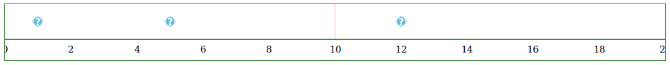
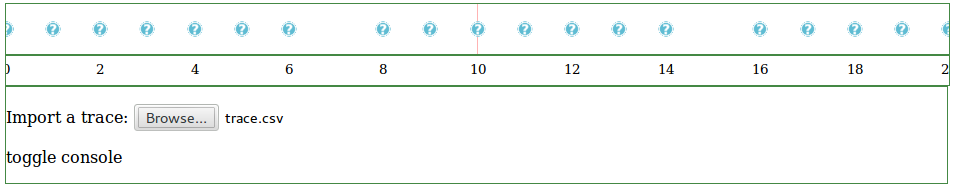
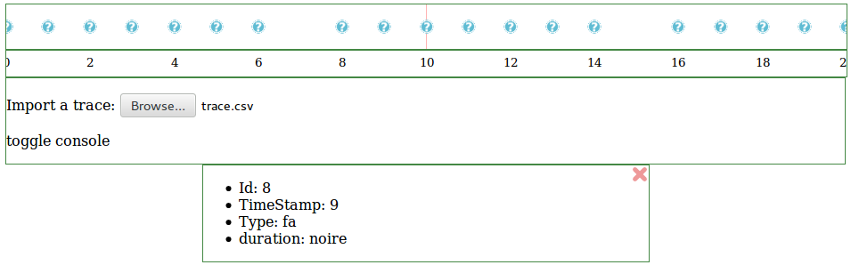

Introduction
In the first part of this tutorial, you have seen how to create a first basic visualisation of a trace with the TraceDisplayIcons widget. In this second part of the tutorial, you will learn how to use other widgets. First, you will add a time scale to the trace. Then you will use a widget that import CSV files in the trace. And finally, you will learn how to use a widget that displays detailed informations about a selected Obsel.
Reminder from part 1 of the tutorial.
Let's start with the code obtained at the end of the previous part of the tutorial:
<!doctype html>
<html>
<head>
<meta charset="utf-8">
<script type="text/javascript" src="javascript/d3.js"></script>
<script type="text/javascript" src="javascript/jquery.js"></script>
<script type="text/javascript" src="javascript/jquery.mousewheel.js"></script>
<script type="text/javascript" src="javascript/Samotraces.js"></script>
<link rel="stylesheet" type="text/css" href="css/samotraces.css">
</head>
<body>
<div id="my-widget"></div>
<script type="text/javascript">
function init() {
// Create logical objects
var trace = new Samotraces.LocalTrace();
var tw = new Samotraces.TimeWindow({start: 0,end: 20});
// Add obsels to the trace
trace.create_obsel({type: 'click', begin: 1});
trace.create_obsel({type: 'click', begin: 5});
trace.create_obsel({type: 'click', begin: 12});
// Create widgets
new Samotraces.UI.Widgets.TraceDisplayIcons('my-widget',trace,tw);
}
// calling the init function when the DOM has been loaded
window.addEventListener('DOMContentLoaded', init );
</script>
</body>
</html>
Reminders
- This files "Samotraces.js", "jquery.js", "jquery.mousewheel.js", and "d3.js" must be placed in a folder called "javascript" and the file "samotraces.css" in a folder called "css".
- This code contains a
<div>HTML tag element with an attributeidset to"my-widget". This HTML DIV element is where the widget will be instanciated. - The Javascript
init()function is run when the page is loaded. This function will:- Create a trace object and a time window object.
- Add obsels to the trace.
- Create a widget that visualise the trace.
More about widgets
As you have seen during the first tutorial, when you want to create a TraceDisplayIcons widget, the first argument that will be provided is the ID of the HTML DIV element where the plugin will be instanciated. This is the case for all the widgets. Every widget will require a unique ID. The framework is not designed to allow several widgets to use the same ID. The other parameters are specific to each widget, as we will see in this tutorial.
In summary, each widget require a unique HTML DIV element with a unique ID. This implies that the first thing to do when adding a widget is to create a new HTML DIV element and create an attribute ID for this element. Then you can update your JavaScript source code to create the new widget.
Adding a time scale
First, we will add a time scale to the trace. This will be done with the WindowScale widget.
The documentation of the WindowScale widget tells us that the WindowScale widget requires two parameters:
- A String, which is the ID of the HTML DIV element where we want to instanciate the widget.
- A TimeWindow which delimitates the current time window.
As we want the time scale to match what is displayed on the
TraceDisplayIcons widget,
we will use the same TimeWindow object
(tw).
All we need to do is to create an HTML DIV element for the widget
(with the id "scale" for instance) and then instanciate the
WindowScale widget with this id and the
TimeWindow object tw that
have already been instanciated:
<div id="scale"></div>
new Samotraces.UI.Widgets.WindowScale('scale',tw);
Now you should see something like this:
When zooming in or out on the trace, you should see that the scale updates itself. The same happens if you move the trace to the left of to the right. This is the magic of using the same TimeWindow object in the two widgets.
Importing a trace
In the previous tutorial, we had added manually three obsels to an empty trace. In this section, we will import obsels from a CSV file with the ImportTrace widget.
First thing to do: we have to remove the code that was adding obsels to the trace. Then, we need to instanciate the ImportTrace widget.
A look at the ImportTrace widget documentation tells us that the ImportTrace widget requires two parameters:
- A String, which is the ID of the HTML DIV element where we want to instanciate the widget.
- A Trace object in which the CSV file(s) will be imported.
As we want to import the CSV file in the current trace, we only need to create
a HTML DIV element for the widget (with the id "importer"
for instance) and then instanciate the
ImportTrace widget with this id and the
trace object already instanciated in parameter:
<div id="importer"></div>
new Samotraces.UI.Widgets.ImportTrace('importer',trace);
The resulting code should be the following:
<!doctype html>
<html>
<head>
<meta charset="utf-8">
<script type="text/javascript" src="javascript/d3.js"></script>
<script type="text/javascript" src="javascript/jquery.js"></script>
<script type="text/javascript" src="javascript/jquery.mousewheel.js"></script>
<script type="text/javascript" src="javascript/Samotraces.js"></script>
<link rel="stylesheet" type="text/css" href="css/samotraces.css">
</head>
<body>
<div id="my-widget"></div>
<div id="scale"></div>
<div id="importer"></div>
<script type="text/javascript">
function init() {
// Create logical objects
var trace = new Samotraces.LocalTrace();
var tw = new Samotraces.TimeWindow({start: 0,end: 20});
// Create widgets
new Samotraces.UI.Widgets.TraceDisplayIcons('my-widget',trace,tw);
new Samotraces.UI.Widgets.WindowScale('scale',tw);
new Samotraces.UI.Widgets.ImportTrace('importer',trace);
}
// calling the init function when the DOM has been loaded
window.addEventListener('DOMContentLoaded', init );
</script>
</body>
</html>
Now, when you load the page, you see a new button appearing asking you to browse for a CSV file. Let's try this out. You will find a CSV file ready to use here.
When you import the file trace.csv, something like this should be displayed:
If you click on "toggle console" you can display or hide a log of the files that have been imported in the trace. Note that it is possible to import several CSV files in a row. It is even possible to select multiple CSV files to import at once.
Inspecting an obsel
Now let's visualise the details of an obsel with the ObselInspector widget. The ObselInspector widget makes it possible to visualise the content of a selected obsel. It offers a simple list of all the attributes of the selected obsel.
The documentation of the ObselInspector widget says that it requires two parameters:
- A String, which is the ID of the HTML DIV element where we want to instanciate the widget.
- A Selector of Obsel object.
Let's try to make the ObselInspector widget work. First, we need to create a HTML div.
<div id="obsel-inspector"></div>
Then we need to instanciate an Obsel Selector. This is done this way:
var obsel_selector = new Samotraces.Selector('Obsel');
Then, we can instanciate the ObselInspector widget:
new Samotraces.UI.Widgets.ObselInspector('obsel-inspector',obsel_selector);
Now, let's see what happens...
Oh! it seems like nothing new happened... Well, what is this widget supposed to do again? It displays the content of a selected obsel.
The selected Obsel is contained in the Selector object. In general, a Selector object stores the a selection of objects. Here, the Obsel Selector stores the currently selected Obsel and would inform the ObselInspector widget when this selection changes. However, when initialised, the selection is empty. And when the selection is empty, the ObselInspector widget is automatically hidden as there is nothing to display.
In order to select an Obsel, we need to use the Selector.select() method, with the obsel as a parameter. The select() method should be triggered by some action of the user. For instance, for the purpose of this tutorial, we would like to be able to click on an Obsel in order to select it. This will require to bind a behaviour to a UI event.
Defining callbacks on events with jQuery
If you know jQuery, you know it is quite easy to add listen to events and trigger a JavaScript function when an event triggers. Samotraces.js is designed so that is makes it easy for you to use jQuery event functions.
So, how does it work?
We will use jQuery to handle the events.
With jQuery, you can easily select elements from your page with the
jQuery $() function.
For instance, you can select the body of the HTML document this way:
$('body').
Then, we will add an event listener to the body of the document. This is done with
the jQuery .on() method.
We will have to write something like this:
$('body').on(EVENT_TYPE, SELECTION, CALLBACK);
,
where EVENT_TYPE will be the type of event we are listening to,
SELECTION is a
jQuery selector that will
filter the elements that will be actually listened to,
and CALLBACK is a function called when the event is triggered.
Note for jQuery users:
When you listen to events with jQuery, you can either listen to events
directly triggered on a predefined selection
(for instance with $(selection).click())
or add a filter to the selection to trigger the event on that more specific subselection.
While the first method is more intuitive and straightforward, it can't be applied
in Samotraces, because the elements you want to listen to may not be already existing
when you try to create the event listener. Instead, the filtering option allow you
to define a behaviour even before everything has been loaded, or even if the content
has changed.
Here, the EVENT_TYPE will have to be the "click" event.
As we want the obsel to be selected when the user click on an obsel.
The SELECTION will be Obsel's visual representation that we will click on.
And the CALLBACK is the function that we will call to select the obsel.
Now, let's define the SELECTION and the CALLBACK.
In Samotraces.js, classes are attached to HTML elements.
Inside a Widget, such as the
TraceDisplayIcons widget,
each obsel representation will be attached to the "Samotraces-obsel"
class.
With jQuery, it is easy to define a class selector (the CSS notation is
used: adding a dot before the name of the class).
Therefore, our SELECTION argument will be
".Samotraces-obsel"
The CALLBACK function called when an event is triggered
requires one argument, which is the event itself.
The event contains data, for instance, event.target is
the HTML element that has be the target of the event.
When clicking on the images that represent an obsel, we would like
to get this obsel and to display it.
The obsel is not directly accessible from the event.
However, the TraceDisplayIcons widget link the Obsel object to
its HTML representation via the jQuery data mechanism.
The obsel information is bound to the HTML element that
has the "Samotraces-obsel" class (therefore, the one that is
the target of the click event).
The Obsel object can be obtained with this code:
$.data(event.target,'Samotraces-data').
Now we can write the callback function:
callback = function(event) {
var obsel = $.data(event.target,'Samotraces-data');
obsel_selector.select(obsel);
};
Here is the code that you should have added to bind the click events to the selection of an obsel (and therefore the display of the obsel in the ObselInspector):
// Select Obsel when clicked
callback = function(event) {
var obsel = $.data(event.target,'Samotraces-data');
obsel_selector.select(obsel);
};
$('body').on("click",".Samotraces-obsel",callback);
Now, you can try clicking on obsels on the trace and the ObselInspector widget should display the information related to the relevant obsel. When you click on an obsel, you should see something like this:

Note that this is a powerful way of defining interactions with the UI.
For instance, if you want the obsel to be selected not when clicked,
but when the pointer of the mouse if over the obsel, just bind the
callback to the "mouseover" event instead of the
"click" event.
Here is the final code that you should have obtained:
<!doctype html>
<html>
<head>
<meta charset="utf-8">
<script type="text/javascript" src="javascript/d3.js"></script>
<script type="text/javascript" src="javascript/jquery.js"></script>
<script type="text/javascript" src="javascript/jquery.mousewheel.js"></script>
<script type="text/javascript" src="javascript/Samotraces.js"></script>
<link rel="stylesheet" type="text/css" href="css/samotraces.css">
</head>
<body>
<div id="my-widget"></div>
<div id="scale"></div>
<div id="importer"></div>
<div id="obsel-inspector"></div>
<script type="text/javascript">
function init() {
// Create logical objects
var trace = new Samotraces.LocalTrace();
var tw = new Samotraces.TimeWindow({start: 0,end: 20});
var obsel_selector = new Samotraces.Selector('Obsel');
// Create widgets
new Samotraces.UI.Widgets.TraceDisplayIcons('my-widget',trace,tw);
new Samotraces.UI.Widgets.WindowScale('scale',tw);
new Samotraces.UI.Widgets.ImportTrace('importer',trace);
new Samotraces.UI.Widgets.ObselInspector('obsel-inspector',obsel_selector);
// Select Obsel when clicked
callback = function(event) {
var obsel = $.data(event.target,'Samotraces-data');
obsel_selector.select(obsel);
};
$('body').on("click",".Samotraces-obsel",callback);
}
// calling the init function when the DOM has been loaded
window.addEventListener('DOMContentLoaded', init );
</script>
</body>
</html>
You can try out the final result of this tutorial here.
Going further
As you have seen in this second part of the tutorial, adding widgets is pretty easy. You can easily add functionnalities to your application and add/remove widgets.
You might wonder if the order in which you add the widgets makes a difference on the order in which widgets are displayed. Well, the answer is: the order of the HTML DIV elements makes a difference. The order of the JavaScript code do not make any difference. The reason why is that the positionning of the widgets depends on the HTML flow. If you want to alter the way widget are displayed or the order in which they appear, you will have to edit the HTML code and/or the CSS style-sheets.
In the next tutorial (Tutorial 1 – part 3: Putting it all together and personalising the visualisation), we will dwell deeper in the use of some widgets. You will learn how to make your own trace visualisation.